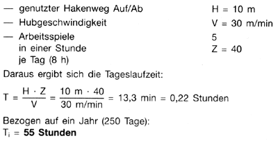
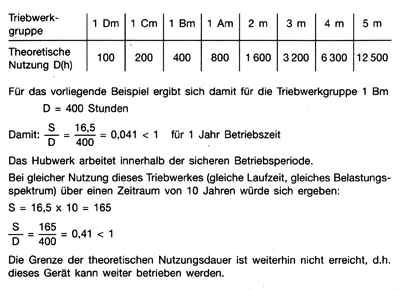
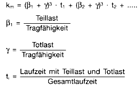
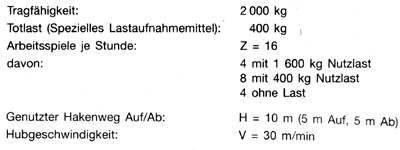
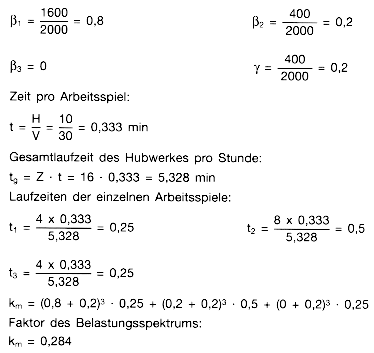
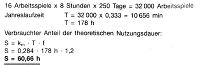
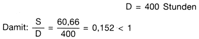

Hinweise zur Ermittlung des verbrauchten Anteils der theoretischen Nutzungsdauer
1 Allgemeines
Seil- und Kettenzüge sowie Kranhubwerke (nachfolgend als Geräte bezeichnet) werden entsprechend ihrer geplanten Betriebsweise in Triebwerkgruppen nach Laufzeiten und Lastkollektiven eingestuft und nach den daraus sich ergebenden Beanspruchungen dimensioniert (DIN 15020; ISO 4301/1; FEM 1.001; FEM 9.511).
Sie sind damit von der gesamten Konzeption der Bemessung und des Nachweises nur für eine begrenzte Nutzungsdauer ausgelegt.
Die Einstufung erfolgt auf der Grundlage
Nach Ablauf der Gesamtnutzungsdauer sind Maßnahmen durchzuführen, bei denen nach Vorgabe des Herstellers Bauteile geprüft und ausgetauscht werden. Danach wird eine neue verfügbare Nutzungsdauer festgelegt.
Mit § 23 Abs. 4 und 5, § 35a und § 37 Abs. 5 dieser Unfallverhütungsvorschrift wurden für einen sicheren Betrieb von kraftbetriebenen Seil- und Kettenzügen sowie von kraftbetriebenen Kranhubwerken Bestimmungen zur Berücksichtigung der vom Hersteller der Bemessung zugrunde gelegten Gesamtnutzungsdauer aufgenommen.
Auch die Maschinenrichtlinie (89/392/EWG) fordert, Maschinen so zu konzipieren und auszuführen, daß unter den vorgesehenen Einsatzbedingungen ein Versagen infolge Ermüdung oder Alterung ausgeschlossen ist (Ziff. 4.1.2.3 des Anhanges 1 der Richtlinie 89/392/EWG). Diese Forderung kann nur erfüllt werden, wenn der Hersteller Angaben zu den der Auslegung zugrundeliegenden Annahmen (Laufzeit und Lastkollektiv) macht und der Betreiber die Einhaltung der Bedingungen überprüft. Hierbei muß in bestimmten Zeitabständen der verbrauchte Anteil der Nutzungsdauer ermittelt werden.
Unter Beachtung der Festlegungen der Maschinenrichtlinie ist davon auszugehen, daß bei neuen Geräten die Betriebsanleitungen der Hersteller Vorgaben für den Betreiber enthalten, die eine Einschätzung und Bewertung des Zustandes der Geräte möglich machen.
Für die Anwendung der Bestimmungen des § 23 Abs. 4 und 5 sowie des
§ 35a
ist der in § 37 Abs. 5 genannte Termin zu
beachten. Die Ermittlung des verbrauchten Anteils der theoretischen
Nutzungsdauer muß bei der nach diesem Termin fällig
werdenden wiederkehrenden Prüfung des jeweiligen Gerätes
erstmals durchgeführt werden.
Die Bestimmungen dieser Unfallverhütungsvorschrift gelten für kraftbetriebene Seil- und Kettenzüge sowie für kraftbetriebene Kranhubwerke.
Für Seil- und Kettenzüge wird in den Durchführungsanweisungen zu § 23 Abs. 4 auf die DIN 15 100 "Serienhebezeuge; Benennungen", Nummern 1.1 (Elektrozüge mit Seil), 1.2 (Elektrokettenzüge) und 2.1 (Druckluftzüge), verwiesen. Gemeint sind damit Geräte, die unabhängig von einem spezifischen Kran oder einem spezifischen Einsatz konstruiert und gefertigt wurden. Diese Geräte sind gekennzeichnet durch eine kompakte Bauart. Andere Geräte, z. B. Montagewinden, Bergewinden, Antriebe für Bauaufzüge, werden von den Bestimmungen dieser Unfallverhütungsvorschrift zur Nutzungsdauer nicht erfaßt. Selbstverständlich sind auch hier die Festlegungen der Hersteller in Betriebsanleitungen zu beachten und einzuhalten.
Eine Ermittlung des verbrauchten Anteils der theoretischen
Nutzungsdauer fordert diese Unfallverhütungsvorschrift
ebenfalls nicht bei Geräten, die in § 23
Abs. 5
aufgeführt sind. Dazu gehören unter anderem auch
kraftbetriebene Kranhubwerke, die regelmäßig durch
Sachverständige geprüft werden und einer
zustandsbezogenen Instandhaltung unterliegen.
Hier werden insbesondere auch Turmdrehkrane berücksichtigt, die auf Baustellen zum Einsatz kommen. Ermittlungen haben ergeben, daß die Hubwerke dieser Krane vielfach weit unter der vom Hersteller angenommenen Beanspruchung eingesetzt werden, wobei andere Einflußfaktoren (äußere Einflüsse, Zusatzbeanspruchungen durch häufigen Auf- und Abbau) für die Nutzungsdauer bestimmend sein können.
2 Seil- und Kettenzüge sowie Kranhubwerke, die nach dem
in § 37 Abs. 5
dieser Unfallverhütungsvorschrift genannten Termin neu in
Betrieb genommen werden
2.1 Kraftbetriebene Seil- und Kettenzüge (allein betrieben bzw. als Kranhubwerke eingesetzt)
Für diese serienmäßig hergestellten Geräte haben die europäischen Hersteller Vorgaben für die Nutzungsdauer unter Berücksichtigung zugrunde gelegter Berechnungen und konstruktiver Auslegungen erarbeitet und als FEM 9.755 herausgegeben.
Detaillierte Vorgaben unter Beachtung der Spezifik des jeweiligen Gerätes sind den Betriebsanleitungen der Hersteller zu entnehmen. Ziel der FEM-Regel ist die Festlegung von Maßnahmen zum Erreichen sicherer Betriebsperioden über die Gesamtnutzungsdauer der Geräte, obwohl nach dem Stand der Technik vorzeitige Ausfälle nicht gänzlich auszuschließen sind.
In der FEM 9.755 wird für Serienhebezeuge aufgrund ihrer Auslegung von einer theoretischen Nutzungsdauer von ca. 10 Jahren ausgegangen, wenn die während des Betriebes auftretenden Beanspruchungen den der Bemessung zugrunde gelegten Belastungskollektiven und Laufzeiten entsprechen. Bei Ablauf dieser theoretischen Nutzungsdauer können nach Generalüberholungen (Prüfung und Austausch geschädigter Bauteile) diese Geräte für eine neue Betriebsperiode weiter betrieben werden.
Ergibt sich bei den in Abständen von einem Jahr durchzuführenden wiederkehrenden Prüfungen des Serienhebezeuges, daß seine Beanspruchung hinsichtlich Laufzeit und Lastkollektiv derjenigen Triebwerkgruppe entspricht, in die es eingeordnet ist (Angabe in Betriebsanleitung, auf Typenschild), verringert sich der verbleibende Anteil der theoretischen Nutzungsdauer um jeweils ein Jahr. Es ist in diesen Fällen nicht erforderlich, bei jeder wiederkehrenden Prüfung Laufzeiten und Lastkollektive zu ermitteln, sondern lediglich einzuschätzen, ob die Betriebsbedingungen gleich geblieben sind.
Liegt die tatsächliche Beanspruchung höher, verkürzt sich folglich die noch verfügbare Nutzungsdauer, liegt die Beanspruchung niedriger, verlängert sich die Nutzungsdauer entsprechend.
In den meisten Fällen ist daher die Ermittlung der tatsächlich vorliegenden Beanspruchung - Laufzeit der Geräte, Belastungsspektrum - ausreichend, um Aussagen für den Weiterbetrieb treffen zu können.
Auch Sachverständige, die zur Beurteilung herangezogen werden, können Aussagen nur auf der Grundlage der Angaben des Betreibers zur Beanspruchung und Laufzeit und der Angaben der Hersteller zur Gesamtnutzungsdauer machen.
Beispiele zur Ermittlung des verbrauchten Anteils der theoretischen Nutzungsdauer enthält Abschnitt 4.
2.2 Kraftbetriebene Kranhubwerke, die keine Serienhebezeuge nach DIN 15 100 sind
Auch bei diesen Geräten müssen die Betriebsanleitungen Angaben zur Nutzungsdauer enthalten. Diese Angaben sind vom Betreiber unbedingt zu beachten. Vielfach werden diese sich auf eine Gesamtnutzungsdauer in Jahren oder Betriebsstunden beziehen. Hinweise dazu enthalten die Durchführungsanweisungen zu § 23 Abs. 4. Ergibt die Beurteilung der tatsächlichen Einsatzbedingungen des Gerätes höhere Beanspruchungen als vorgesehen, ist der Hersteller zu befragen, da sich dann die Nutzungsdauer bis zur erforderlichen Generalüberholung bzw. bis zur Durchführung vorgegebener Maßnahmen verringert.
3 Seil- und Kettenzüge sowie Kranhubwerke, die zum
Zeitpunkt des in
§ 37 Abs. 5 dieser
Unfallverhütungsvorschrift genannten Termins bereits in
Betrieb waren
Beanspruchung und Laufzeiten für zurückliegende Einsatzzeiträume werden in vielen Fällen nicht nachvollziehbar sein. Eine Einschätzung ist hier in der Regel nur überschlägig möglich. Außerdem stehen vielfach Angaben der Hersteller über die Gesamtnutzungsdauer nicht zur Verfügung, so daß ein Vergleich nicht durchgeführt werden kann.
Die Übergangsbestimmungen in § 37 Abs. 5 tragen dem Rechnung und beinhalten modifizierte Verfahrensweisen.
Auch bei bereits in Betrieb befindlichen Seil- und Kettenzügen muß im allgemeinen von einer Nutzungsdauer von ca. 10 Jahren ausgegangen werden, wenn keine Ermittlungen möglich sind. Ist dieser Zeitraum bereits überschritten, ist eine Generalüberholung zu veranlassen (§ 37 Abs. 5 Nr. 2). Mit dem in dieser Unfallverhütungsvorschrift genannten Zeitraum bis 31. Dezember 1997 soll Unternehmen mit einer Vielzahl von Geräten die Möglichkeit gegeben werden, entsprechend den jeweiligen Einsatzbedingungen der Geräte zeitlich gestaffelte Maßnahmen einzuleiten.
Sind Ermittlungen überschlägig möglich und sind Angaben des Herstellers vorhanden oder können nachträglich erfragt werden (z. B. Triebwerkgruppe), kann sich ergeben, daß bei wenig genutzten Geräten (z. B. Werkstattkrane) die tatsächliche Beanspruchung geringer ist als die, die vom Hersteller bei der Dimensionierung zugrundegelegt wurde.
Wird beispielsweise ein Gerät, das für die Triebwerkgruppe 1Am ausgelegt ist, lediglich in der Gruppe 1Bm betrieben, können die für die höhere Triebwerkgruppe zulässigen Nutzungszeiten angesetzt werden; siehe auch Tabelle in Abschnitt 4.1.4. Die Nutzungsdauer verlängert sich in diesen Fällen entsprechend.
Dabei kann sich auch ergeben, daß ein Gerät entsprechend seiner bisherigen und auch der zukünftig zu erwartenden Einsatzbedingungen weit unter seinen Auslegungskriterien betrieben wird (verbrauchter Anteil der theoretischen Nutzungsdauer z. B. kleiner als 3 % pro Jahr). Das betrifft z. B. Krane in Pumpenstationen oder Generatorhallen, die nur zur Reparatur oder zum Austausch von Baugruppen eingesetzt werden. In diesen Fällen, bei denen eine jährliche Ermittlung des verbrauchten Anteils der theoretischen Nutzungsdauer nicht relevant ist, können Bewertungen in größeren Zeitabständen erfolgen. Bei der wiederkehrenden Prüfung ist lediglich zu kontrollieren, daß sich die Betriebsbedingungen nicht verändert haben. Vorgaben der Hersteller in Betriebsanleitungen bezüglich Wartung, Kontrollen und Prüfungen sind einzuhalten.
Der Umfang von Generalüberholungen ist unter Berücksichtigung der Vorgaben der Hersteller zu bestimmen. Sie werden im Allgemeinen aus Kontrollen, Prüfungen sowie dem Austausch von bestimmten Bauteilen bestehen.
Liegen keine Angaben vor und kann der Hersteller nicht befragt werden, sollten Fachwerkstätten einbezogen werden.
Die Generalüberholung ist vom durchführenden Unternehmen im Prüfbuch zu dokumentieren. Dazu gehört auch die Festlegung der Bedingungen für den weiteren Betrieb (neue Nutzungsdauer), damit der Betreiber dann gemäß den Bestimmungen des § 23 Abs. 4 verfahren kann.
Auch bei Kranhubwerken, die keine Serienhebezeuge sind, muß von gleichen Verhältnissen ausgegangen werden, sofern keine anderen Angaben in der Dokumentation enthalten sind bzw. vom Hersteller bestätigt werden. Die vorstehend gemachten Aussagen sind deshalb auch hier zutreffend.
In den Übergangsbestimmungen (§ 37 Abs. 5 Nr. 3) ist auch festgelegt, daß bei Kranhubwerken, die keine Serienhebezeuge sind, eine Ermittlung des verbrauchten Anteils der theoretischen Nutzungsdauer entfallen kann, wenn eine regelmäßige zustandsbezogene Instandhaltung durchgeführt wurde. Diese Bestimmung ist nicht an bisherige regelmäßige Prüfungen durch Sachverständige gebunden, sondern trägt der Tatsache Rechnung, daß insbesondere bei größeren Kranhubwerken bereits jahrelange Erfahrungen über das Verschleißverhalten der einzelnen Baugruppen vorliegen und durch gezielte und terminierte Prüfungen und Kontrollen, die auch das Getriebe mit einschließen, der rechtzeitige Austausch von im Kraftfluß liegenden Teilen erfolgt.
Diese Bestimmung wird auf eine Vielzahl von insbesondere älteren Kranen zutreffen, die z. B. im Laufe ihrer Betriebszeit bereits instandgesetzt und bei denen aufgrund festgestellten Verschleißes bestimmte Baugruppen bereits erneuert worden sind.
4 Beispiele für die Ermittlung des verbrauchten Anteils der theoretischen Nutzungsdauer von kraftbetriebenen Seil- und Kettenzügen 1), die für sich allein oder als Kranhubwerke eingesetzt sind
| Grundlage: | FEM 9.755 "Maßnahmen zum Erreichen sicherer Betriebsperioden von motorisch angetriebenen Serienhubwerken (S.W.P.)" |
| FEM 9.511 "Berechnungsgrundlagen für Serienhebezeuge; Einstufung der Triebwerke" |
4.1 Beispiel I
Für die Ermittlung des verbrauchten Anteils der theoretischen Nutzungsdauer sind folgende Faktoren zu bestimmen:
4.1.1 Laufzeit des Hubwerkes
Die Bestimmung der Laufzeit eines Hubwerkes kann in den meisten Fällen, insbesondere wenn zurückliegende Zeiträume eingeschätzt werden müssen, nur überschlägig durchgeführt werden. Zu beachten ist, daß es sich dabei nicht um die gesamte Einsatzzeit eines Hebezeuges handelt, sondern nur um die Zeit, während der das Hubwerk für Heben oder Senken eingeschaltet ist. Nicht berücksichtigt werden daher z. B. Kranfahrt ohne Hub- oder Senkbewegungen.
Für das vorliegende Beispiel wird eine gleichmäßige Nutzung über ein Jahr angenommen:
Folgende Angaben liegen zugrunde:

4.1.2 Belastungsspektrum
Bei einer Einschätzung zurückliegender Einsatzjahre wird die Ermittlung der tatsächlichen Lastkollektive und damit der Faktoren der Belastungsspektren (km) problematisch.
In der Regel wird man daher hier eine Einordnung in eines der vier Lastkollektive vornehmen, die in Tabelle 1 der FEM 9.755 aufgeführt sind.
_________________________
1) Nummern 1.1, 1.2 und 2.1 DIN 15 100 "Serienhebezeuge, Benennungen"
Die FEM-Regel unterscheidet zwischen:
| - leichtem Einsatz | km ≤ 0,125 |
| - mittlerem Einsatz | 0,125 < km ≤ 0,25 |
| - schwerem Einsatz | 0,25 < km ≤ 0,5 |
| - sehr schwerem Einsatz | 0,5 < km ≤ 1 |
In der Anlage werden für diese Gruppen einige Beispiele für Lastkollektive aufgeführt, um die Einordnung zu verdeutlichen.
Für eine genaue Ermittlung des Faktors km bei bekannten Lastkollektiven werden im Beispiel II entsprechende Hinweise gegeben. Diese Ermittlung wird auch erforderlich, wenn sich die Beanspruchung des Gerätes (Laufzeit, Lastkollektiv) geändert hat, z. B. beim Übergang zum Mehrschichtbetrieb oder durch veränderte Produktionsverhältnisse.
Für vorliegendes Beispiel I wird ein mittlerer Einsatz, wie er häufig im Betrieb vorkommt, mit einem Faktor des Belastungsspektrums von
4.1.3 Berechnung des verbrauchten Anteils der theoretischen Nutzungsdauer für 1 Jahr
Der verbrauchte Anteil der theoretischen Nutzungsdauer berechnet sich wie folgt:
S = km x Ti x f
S: Verbrauchter Anteil der theoretischen Nutzungsdauer im jeweiligen Zeitraum (hier 1 Jahr)
Ti: Laufzeit des Hubwerkes im jeweiligen Zeitraum
f: Zuschlagfaktor für einfache Protokollierungsverfahren. Für vorliegendes Beispiel:
Damit ergibt sich:
S = 0,25 x 55 x 1,2
S = 16,5 h
4.1.4 Bewertung
Gemäß Dokumentation (Angabe auch auf dem Typenschild) ist das Hubwerk in die Triebwerkgruppe
1 Bm
eingestuft.
Die gemäß Abschnitt 1.3 ermittelte Teilnutzung S ist mit der in Zeile 4 der Tabelle 1 der FEM 9.755 angegebenen theoretischen Nutzung D (h) - Volllastlebensdauer - zu vergleichen.
Danach beträgt die theoretische Nutzung D für die einzelnen Triebwerkgruppen:

4.2 Beispiel II
Bei intensiv genutzten Hebezeugen bzw. bei sehr unterschiedlicher Nutzung sollte der Faktor km genauer bestimmt werden. Dabei kann wie folgt vorgegangen werden:

Totlasten sind am Hebezeug angebrachte Lastaufnahmemittel (z. B.
Greifer, Magnet, Traversen). Bewegungen ausschließlich mit
kleineren Totlasten (bis ca. 15% der Tragfähigkeit)
können zur Vereinfachung vernachlässigt werden.
Für das Beispiel II werden folgende Verhältnisse
angenommen:

Alle Hebevorgänge werden mit dem speziellen Lastaufnahmemittel (Totlast) durchgeführt.
4.2.1 Berechnung

4.2.2 Bestimmung des verbrauchten Anteils der theoretischen Nutzungsdauer für 1 Jahr
Laufzeit des Hubwerkes für 1 Jahr:

4.2.3 Bewertung:
Gemäß Dokumentation (Angabe auf dem Typenschild) ist das Hubwerk in die Triebwerkgruppe
1Bm
eingestuft. Dafür ergibt sich aus der Tabelle in Abschnitt 4.1.4 eine theoretische Nutzung von

Damit arbeitet das Hubwerk innerhalb einer sicheren Betriebsperiode.
Bei gleicher Nutzung des Hubwerkes in den folgenden Jahren wäre spätestens nach 7 Jahren eine Generalüberholung erforderlich, bei der die vom Hersteller zu benennenden Teile auszutauschen, andere Teile nach Vorgabe zu prüfen sind.
Aufgrund der Jahreslaufzeit des Hubwerkes (178 h) und des vorhandenen Lastkollektivs mit dem Faktor des Belastungsspektrums von km = 0,284 hätte hier ein Hubwerk, das für die nächsthöhere Triebwerkgruppe (1 Am) ausgelegt ist, eingesetzt werden müssen, um eine Gesamtnutzungsdauer von mindestens 10 Jahren zu erreichen. Die theoretische Nutzung D hätte dann 800 h betragen.